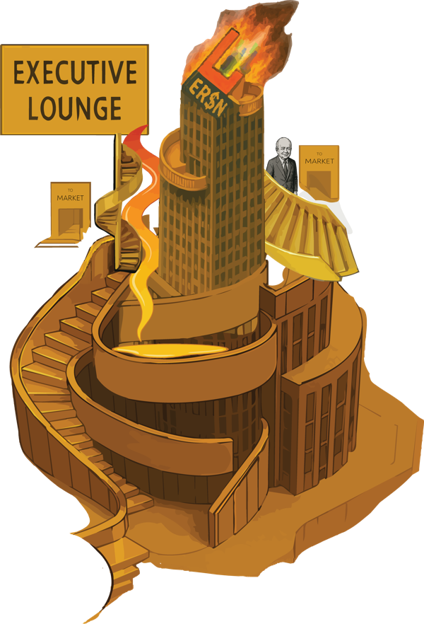
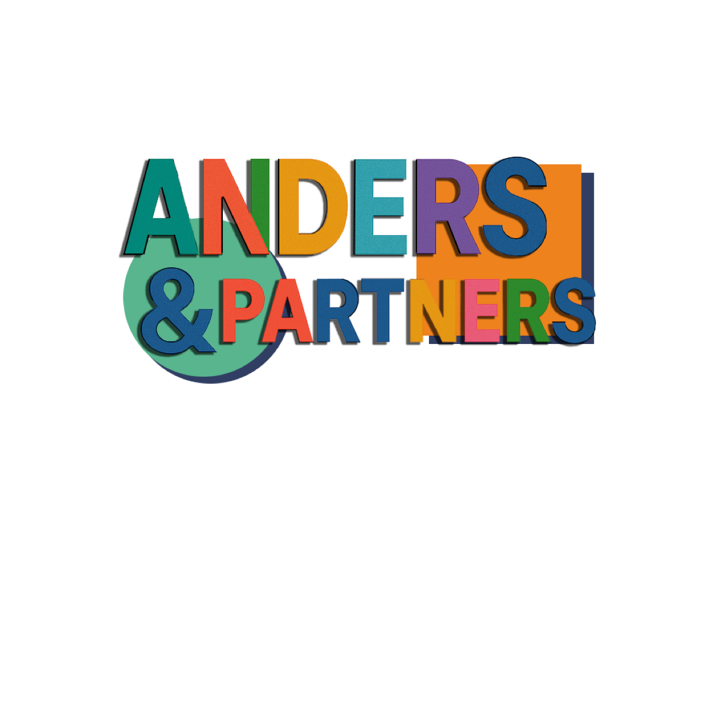
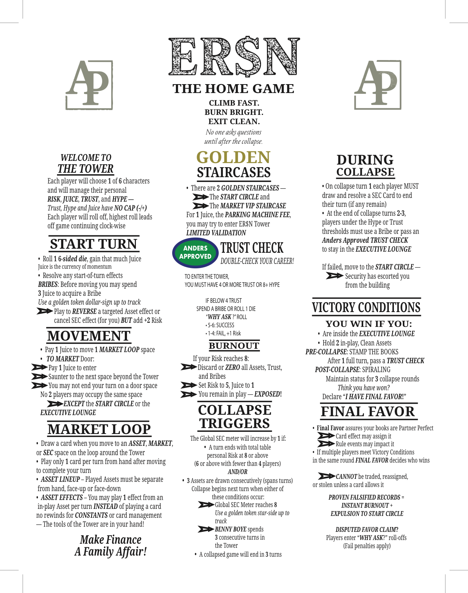

Each player will choose 1 of 6 characters and will manage their personal RISK, JUICE, TRUST, and HYPE — Trust, Hype and Juice have NO CAP (−/+).
Each player will roll off, highest roll leads off, game continuing clockwise.
BRIBES: Before moving you may spend 3 Juice to acquire a Bribe
Use a golden token dollar-sign up to track
No 2 players may occupy the same space
No rewinds for CONSTANTS or card management — The tools of the Tower are in your hand!
For 1 Juice, the PARKING MACHINE FEE, you may try to enter ER$N Tower
LIMITED VALIDATION
Double-check your career!
TO ENTER THE TOWER,
YOU MUST HAVE 4 OR MORE TRUST OR 8+ HYPE — qualified players walk straight in, no roll.
IF BELOW THRESHOLD, SPEND A BRIBE OR ROLL 1 DIE —
the "WHY ASK?" ROLL:
Benchmark: checks are character-aware — Class Ring passes on 2+, The Safe needs a 6, Raptor Leasing turns a fail into +2 Risk.
If your Risk reaches 8:
The Global SEC meter will increase by 1 if:
Collapse begins next turn when either of these conditions occur:
Expansion: the hidden SHADOW SEC meter is card-driven — collapse also triggers at Shadow SEC 8.
If failed, move to the START CIRCLE —
PRE-COLLAPSE: STAMP THE BOOKS
After 1 full turn, pass a TRUST CHECK
POST-COLLAPSE: SPIRALING
Maintain status for 3 collapse rounds
Think you have won?
Declare "I HAVE FINAL FAVOR!"
PROVEN FALSIFIED RECORDS =
INSTANT BURNOUT +
EXPULSION TO START CIRCLE
DISPUTED FAVOR CLAIM?
Players enter "WHY ASK?" roll-offs
(Fail penalties apply)
The house's favorite son. Golden Walk strolls him into the Lounge FREE at a staircase — no Juice, no roll — and if he ends 3 straight turns up there, Castle Doctrine pulls the pin on the whole game. Benny is the doomsday clock.
VS: He decides when it ends. Be Lounge-ready before he starts his three-count — don't get caught on the stairs when Benny starts humming.
The long game in a pantsuit — starts with the Trust to walk in the front door. Unimpeachable buys Trust by handing a rival Juice; Cooked bites if her Hype hits 4+. She never celebrates. That's how you know she already won.
VS: Low-variance. You beat her by getting there first, not by out-grinding her.
Launders garbage into gold. The Stamp counts two face-up Dirty as one Clean (if nothing's face-down), and Leaky Bucket lets her cling to the Lounge through a collapse eviction. Underdog on paper. She is not.
VS: She needs the Dirty pile intact — disrupt it before she stamps.
The compounding machine. Dough-Man Cometh doubles his Juice every other turn; he hoards, protects the spiral, never spends down early. His sheet is an illusion — put him in the red and force the early Bribes.
VS: Hit him before turn 4. Late, he's a runaway train with a caboose full of money.
The wrecking ball. Floorplan Master ignores movement blocks and moves free; Strategic Fade shaves Risk when Wu sits still. Wu doesn't build. Wu demolishes — and boxes out whoever's ahead.
VS: Don't leave loaded face-down Assets where a disruptor can knock them over.
Pure narrative. Hype-Man pumps Hype off every Market card; he rides the Hype ≥ 8 bridge straight into the Lounge and skips the Trust game entirely. He's on fire and he thinks it's the spotlight.
VS: Fragile at the top — one bad SEC card or a Trust crater and the balloon pops.
